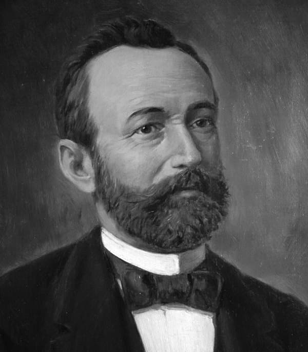
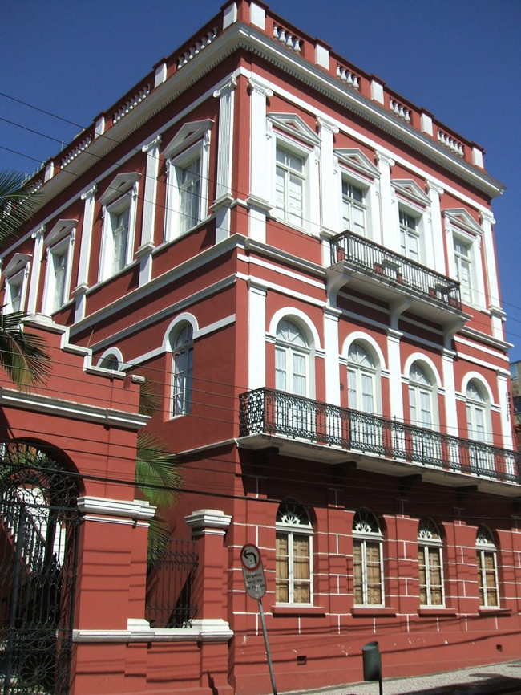
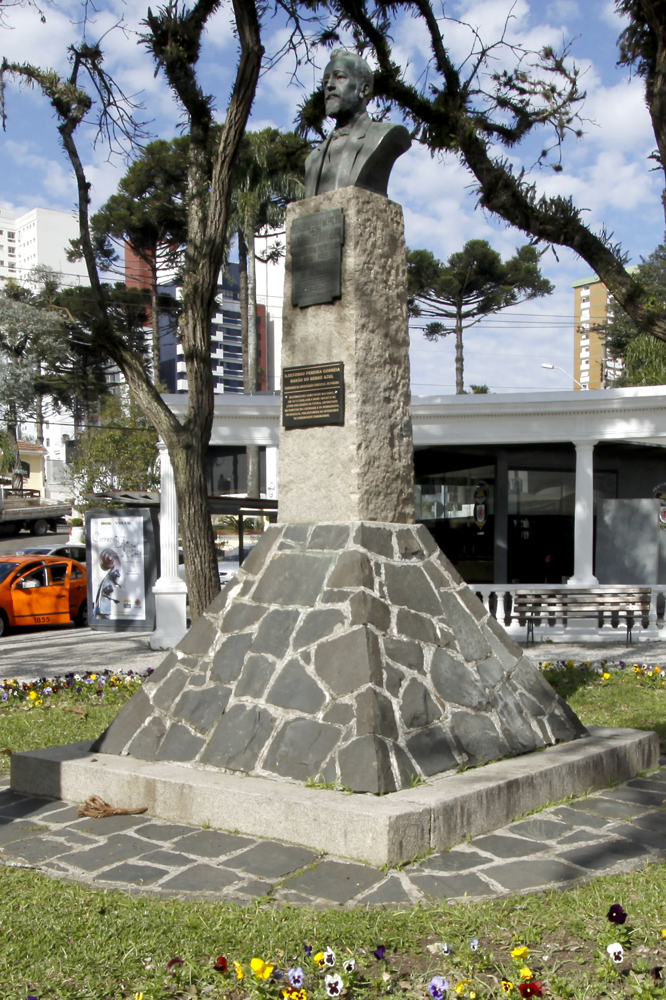
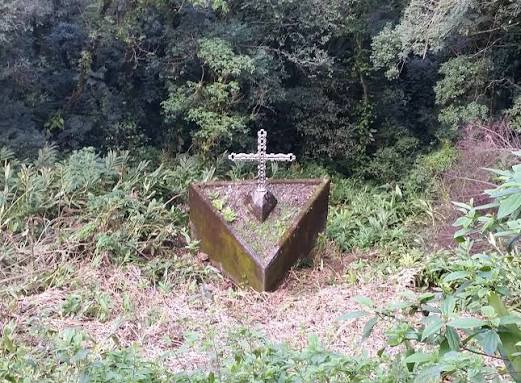

Bem-vindo ao Portal Barão do Serro Azul: O Legado do Herói da Paz
Descubra a fascinante trajetória de Ildefonso Pereira Correia, o Barão do Serro Azul, uma das figuras mais emblemáticas e injustiçadas da história do Brasil. Muito além do nome que estampa ruas e praças no Paraná, o Barão foi o maior exportador de erva-mate do mundo, um industrial visionário e um líder abolicionista à frente de seu tempo.Este espaço é dedicado a resgatar a verdade histórica sobre o homem que arriscou sua fortuna e sua vida para salvar Curitiba do massacre durante a Revolução Federalista de 1894. Julgado como traidor no passado, hoje ele ocupa seu lugar de direito no Livro de Aço dos Heróis Nacionais. Navegue por nossos conteúdos, explore documentos da época, conheça suas grandes obras e mergulhe na história da construção da identidade paranaense.

O Paraná do Século XIX: O Ciclo do Mate, a Modernização e as Tensões da Nova República
Durante a segunda metade do século XIX, o Paraná experimentou uma era de ouro econômica impulsionada pela explosão do ciclo da erva-mate, commodity que financiou a modernização da infraestrutura provincial e conectou a região aos mercados globais. Cidades como Curitiba e Paranaguá se transformaram rapidamente com a chegada de ferrovias, indústrias a vapor e novos contingentes de imigrantes europeus que remodelaram o tecido social e urbano. No entanto, esse clima de prosperidade e progresso foi abruptamente sufocado pelas tensões políticas da recém-proclamada República brasileira; o jovem estado do Paraná viu-se tragicamente preso no fogo cruzado entre o autoritarismo do governo de Floriano Peixoto e a violência armada da Revolução Federalista, criando o ambiente de instabilidade que selaria o destino de lideranças pacíficas como o Barão do Serro Azul.

Vanguarda Cultural e Memória Viva: O Legado do Barão nas Artes e no Patrimônio Paranaense
Para além de sua relevância econômica, o Barão do Serro Azul foi o principal catalisador cultural de sua época, deixando marcas profundas que ainda moldam a identidade e o turismo do Paraná. Ao fundar a Impressora Paranaense, ele abriu as portas para o nascimento da imprensa e da literatura locais, enquanto seu imponente casarão no centro de Curitiba funcionava como o coração intelectual da cidade, abrigando saraus, debates políticos e manifestações artísticas de vanguarda. Hoje, esse mesmo espaço — transformado no complexo cultural Solar do Barão — perpetua sua memória como um vibrante polo público de preservação da gravura, do cinema, da fotografia e da música. Esse impacto histórico e patrimonial garantiu que o Barão ultrapassasse a condição de personagem do passado para se tornar um símbolo vivo da criatividade e da resistência cultural paranaense.

Curiosidades
O Barão que virou alvo de uma caçada
Pouca gente sabe que o Barão do Serro Azul acabou sendo perseguido justamente por ter tentado evitar uma tragédia em Curitiba. Durante a Revolução Federalista, em 1894, ele negociou com os federalistas para impedir que a cidade fosse atacada. Mesmo tendo agido para proteger a população, acabou sendo visto com desconfiança pelas autoridades republicanas. O desfecho foi trágico: o Barão foi preso e, posteriormente, levado para a região da Serra do Mar, onde foi executado. A história chama atenção porque aquele que tentou evitar uma guerra acabou sendo tratado como inimigo.

A misteriosa morte na Serra do Mar
A morte do Barão do Serro Azul é cercada por uma história que parece saída de um filme. Em maio de 1894, depois de ser preso, Ildefonso Pereira Correia foi levado de trem em direção ao litoral do Paraná junto com outros presos. Durante a viagem, ele e seus companheiros foram retirados do trem na região da Serra do Mar e executados. Durante muito tempo, o episódio ficou marcado pela dúvida e pela indignação: como um dos homens mais ricos e influentes do Paraná poderia terminar morto dessa maneira? Décadas depois, sua memória seria recuperada e ele passaria a ser reconhecido como herói nacional.
